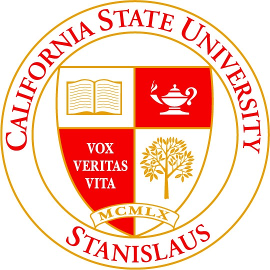

California State Univeristy Stanislaus
I made the decision to further my education. I attended for CSU Stanislaus in Turlock, CA. I received my Bachelor of Science degree in Business with a concentration in Marketing. I am part of the proud graduating class of 2013.